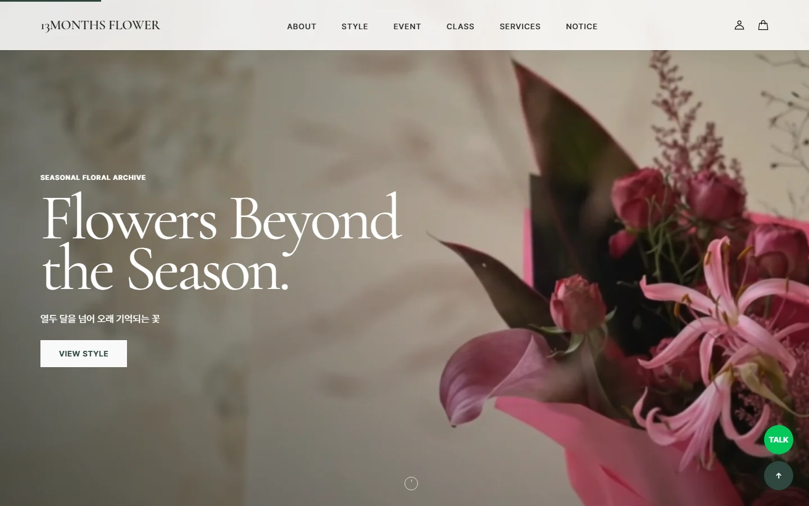
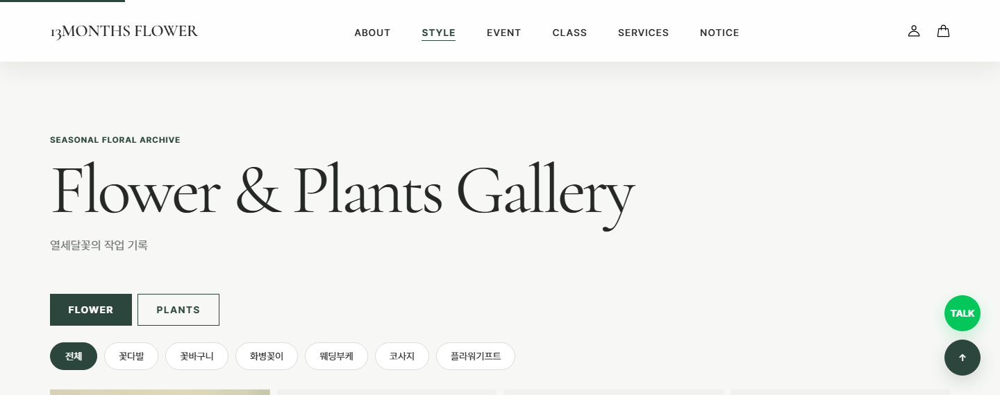
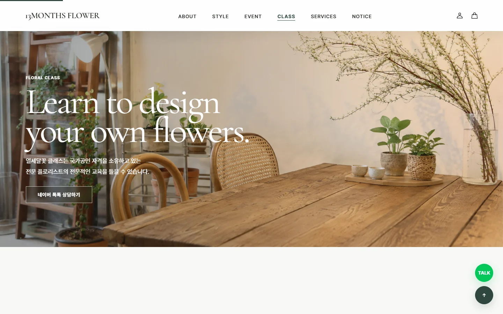
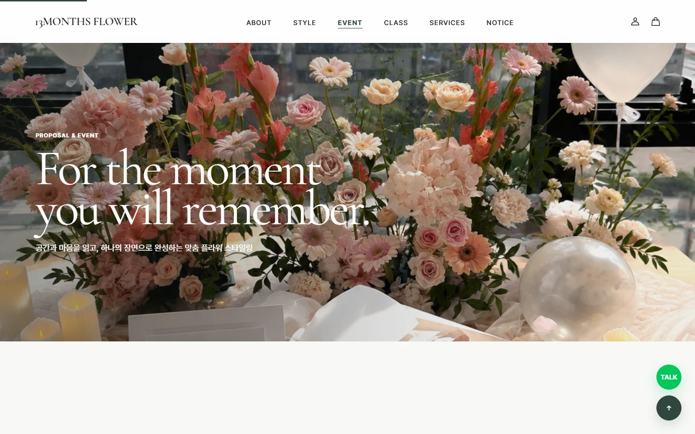
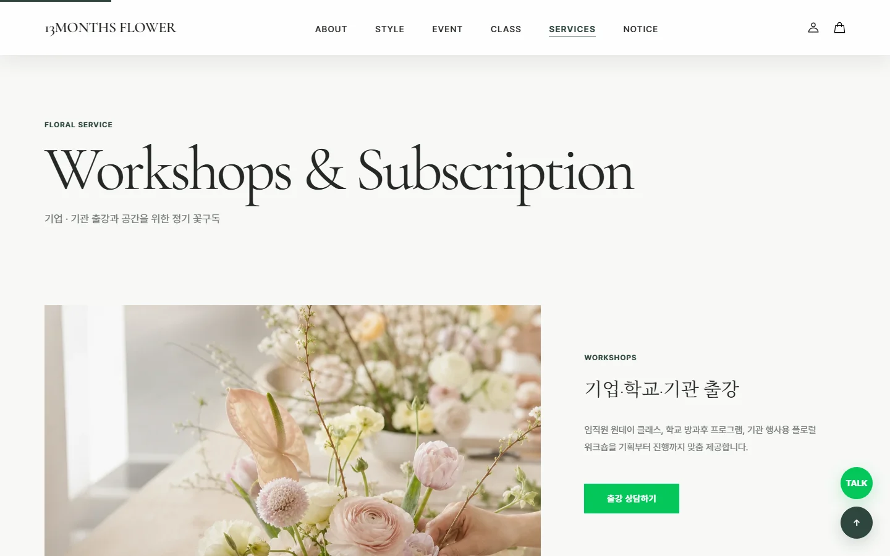
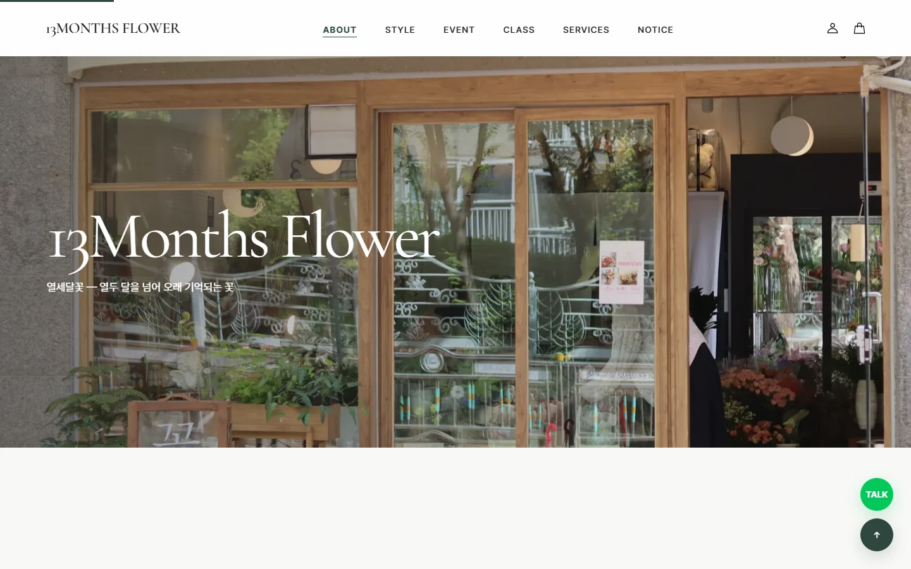
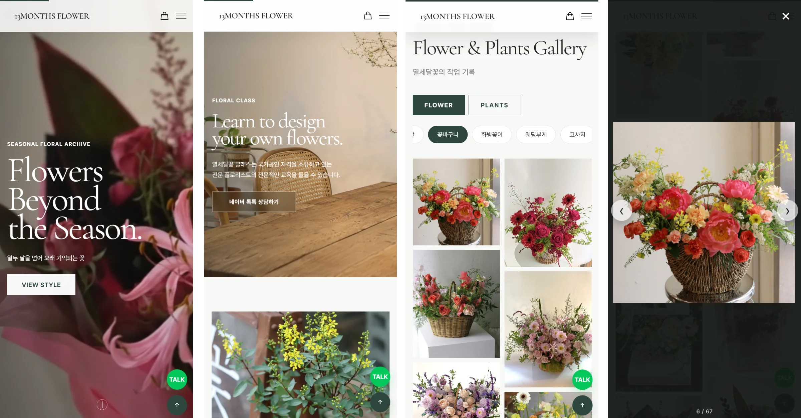

Overview
꽃집 사이트를 커머스로만 만들지 않고, 계절마다 달라지는 작업을 아카이브처럼 쌓아 보여주는 구조로 만들었습니다.
My Role
브랜딩, 웹 디자인, 카페24 스킨 퍼블리싱까지 담당했습니다. 실제 운영 중인 사이트입니다.
Build
메인 · 갤러리(STYLE) · 이벤트 · 클래스 · 서비스 · 브랜드 소개. 데스크톱과 모바일 두 화면으로 각각.
Stack
- HTML
- CSS
- jQuery
- Swiper
- Cafe24
-
01
기획
-
02
시안 잡기
-
03
시안 다듬기
-
04
카페24 무료 스킨 퍼블리싱
-
05
검수 및 수정
Foundations
-
Paper
기본 바탕
#FFFFFF -
Background
섹션 바탕
#F7F8F6 -
Ink
본문 글자
#252824 -
Muted
보조 글자
#747A75 -
Line
구분선
#D9DEDA -
Point
버튼 · 강조
#2D463D -
Point dark
눌렸을 때
#202B27
- 큰 제목 · 영문 Cormorant Garamond Flowers Beyond the Season.
- 본문 · 정보 · 조작 요소 Pretendard 열두 달을 넘어 오래 기억되는 꽃 · 꽃바구니 · 웨딩부케
PC






Mobile
